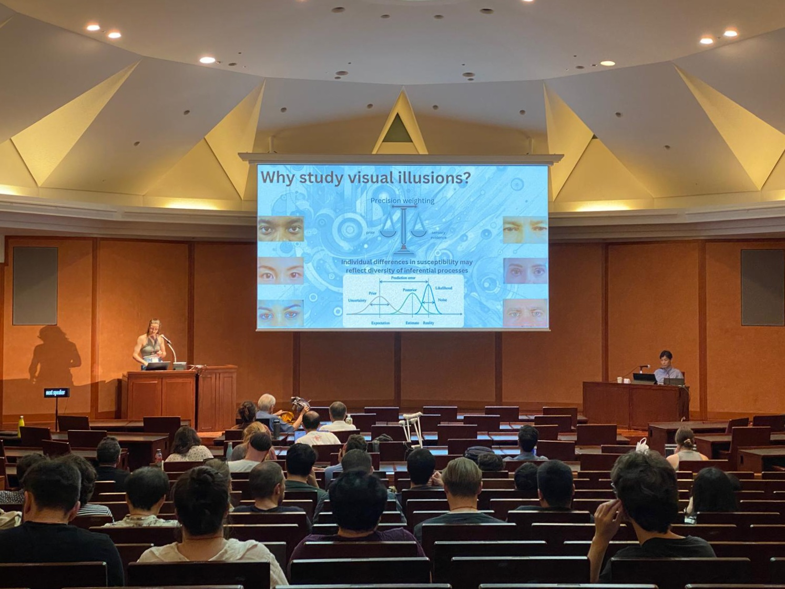
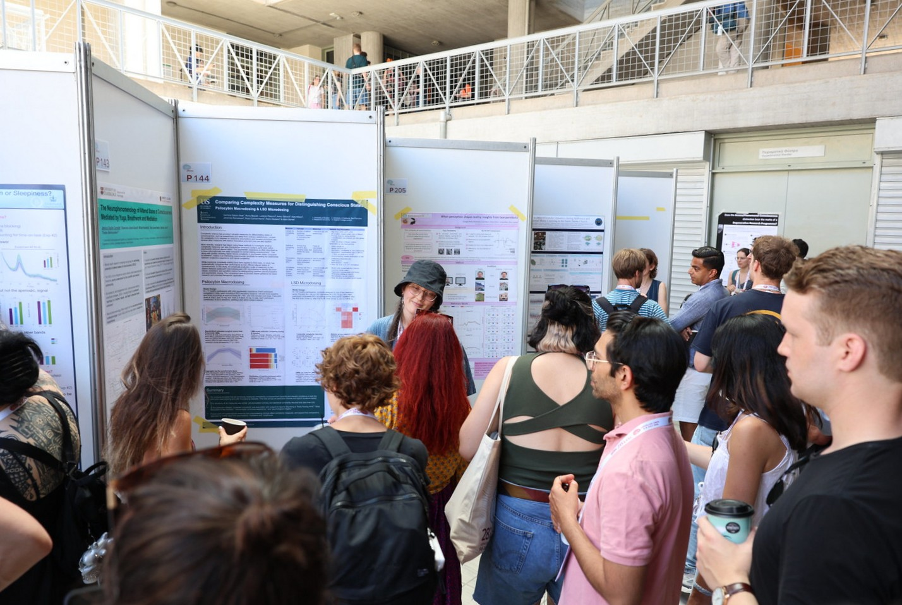
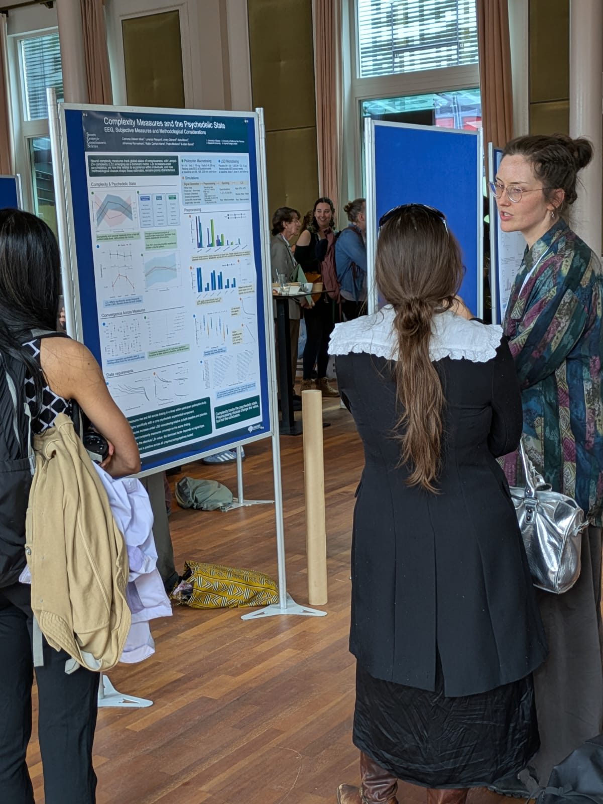
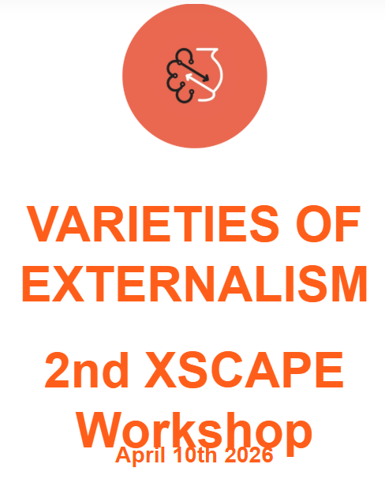
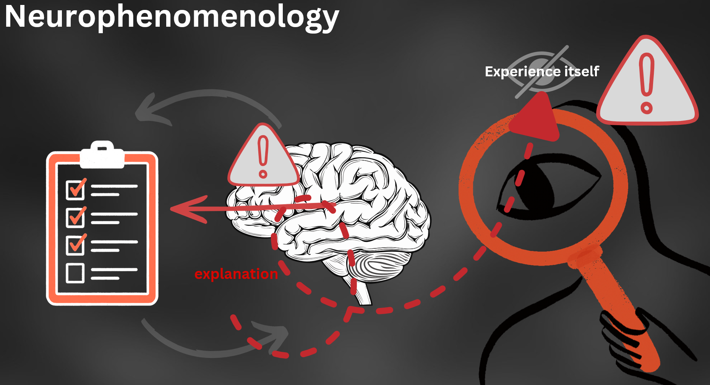
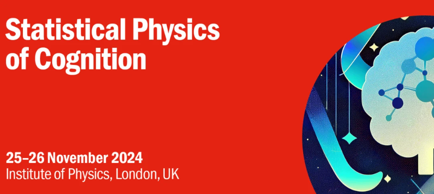
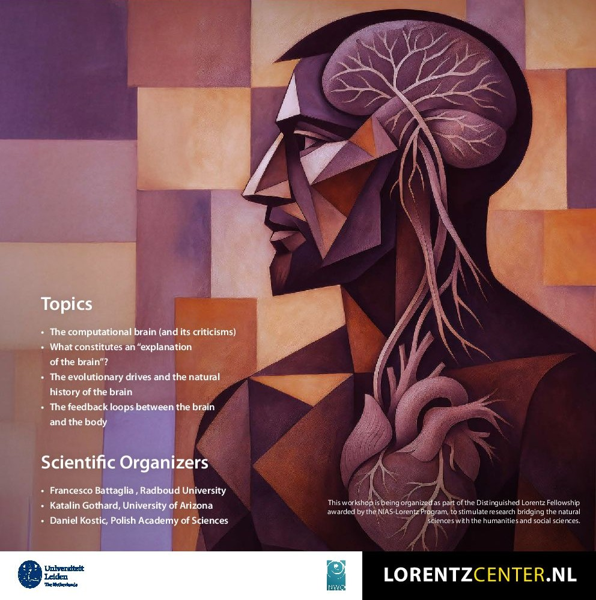
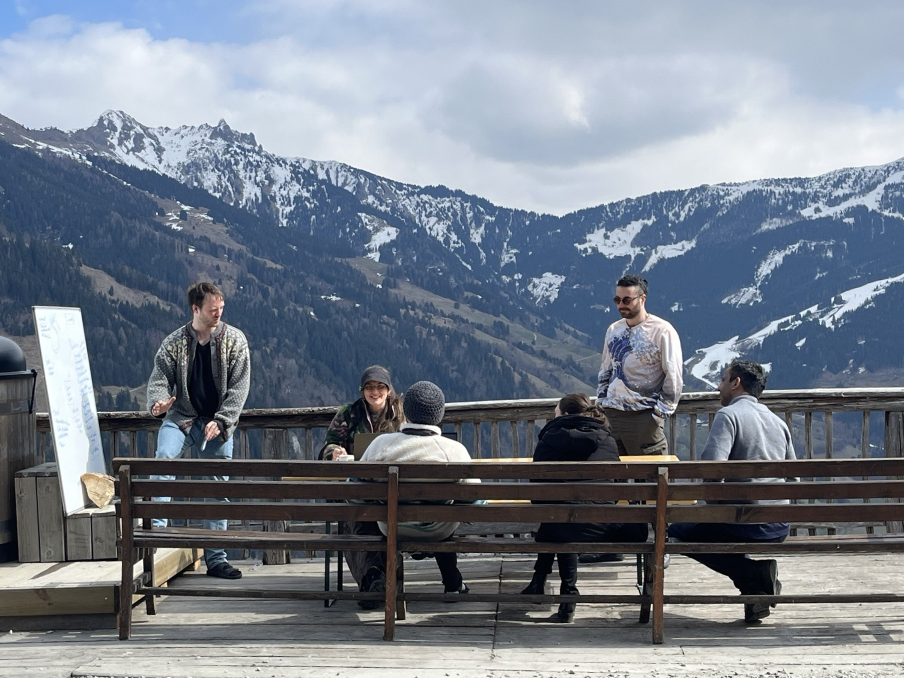

Talks, Posters & Workshops
Talks
-

“Visual Illusions: A Window into Perceptual Diversity”
Presented behavioural and neural work on illusion susceptibility through the lens of predictive processing. Received a travel grant from the Guarantors of Brain. -
 “Dying Brain Dynamics: Challenges in Measurement and Interpretation”
“Dying Brain Dynamics: Challenges in Measurement and Interpretation”
Invited talk presenting collaborative work analysing neural dynamics during the dying process and links with near-death experience phenomenology. -
 “Relational Commitments and Internalist Gravity: Tensions in Computational Neurophenomenology?”
“Relational Commitments and Internalist Gravity: Tensions in Computational Neurophenomenology?”
Contributed a talk examining tensions in computational neurophenomenology, designed to stimulate discussion.
Posters
-

“Comparing Complexity Measures for Distinguishing States of Consciousness: Psilocybin Macrodosing and LSD Microdosing”
Presented comparative work on complexity measures applied to altered-state EEG datasets. -

“Complexity and the Psychedelic State: EEG, Subjective Measures and Methodological Considerations”
Presented EEG complexity work on the psychedelic state, its relationship to subjective measures, and the methodological work using simulations and multiverse-style analysis of empirical EEG data. -

“Psychiatric Ecologies: An Adaptive Closure Beyond Externalism”
An enactive, organisational-closure framework for psychiatry that moves beyond standard externalist positions. -
 “A User's Guide to Lempel-Ziv Complexity”
“A User's Guide to Lempel-Ziv Complexity”
Presented simulation work examining how signal structure and preprocessing shape LZc estimates.
Public Engagement
-

“Strange Loops: Consciousness, Psychedelics, and the Limits of Neuroscience”
Public talk on consciousness, psychedelics, and the explanatory limits of neuroscience.
Workshops & Participation
-
 Mediterranean Society for Consciousness Science (MESEC)
Mediterranean Society for Consciousness Science (MESEC)
Interdisciplinary discussions on non-ordinary states of consciousness; group work with Thomas Metzinger on Minimal Phenomenal Experience; contributed to a published essay review. -

Statistical Physics of Cognition Workshop
Two-day workshop on statistical physics approaches to neural activity; explored network science and information-theoretic methods. -

Brain and Organisms: Neuroscience Beyond Computation
Five-day multidisciplinary workshop focused on rethinking dominant computational approaches in neuroscience. -

Computational Neurophenomenology Cabin Workshop
Week-long, small-group, discussion-driven workshop on open problems in computational neurophenomenology.